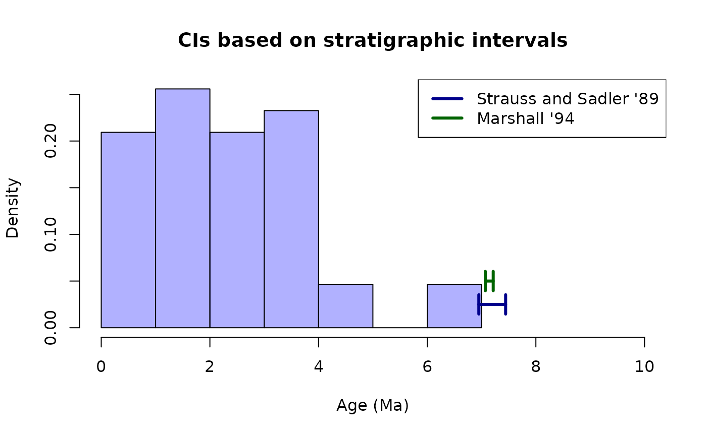

Stratigraphic intervals
Gustavo A. Balen and Sandra Reinales
Source:vignettes/stratigraphic_intervals.Rmd
stratigraphic_intervals.RmdSome methods are available for estimating the confidence intervals on
the extreme points of a stratigraphic interval, i.e., an estimate for
the point of appearance and disappearance of a given taxon in geologic
time. These methods are relevant here since we can think of a
biogeographic events in the same way as taxa appear and become extinct.
This approach is lacking in historical biogeography as far as we know,
and seems to fit the main goal of determining the final point of
connection between biogeographic areas. Marshall (2010)1 summarised different
approaches for estimating confidence intervals under certain sampling
regimes, assumptions and confidence levels, ranging from classical to
Bayesian estimators. The package tbea implements two of
these methods, the classical (Strauss and Sadler, 1989)2 and the
distribution-free estimator of Marshall (1994)3.
The first method provides estimators where one- () or two-parameter () cases are constructed adding and subtracting a portion of the magnitude of the observed stratigraphic interval . Such constant depends on the confidence level wanted (e.g., ).
The second method of distribution-free confidence intervals was developed without assuming any particular distribution of underlying gap sizes, instead, it calculates quantiles of gap size between occurrence points for an ordered vector of gap sizes. The major cost is that such intervals are larger that classical CIs and on the other hand, require much more data for constructing intervals of high confidence (e.g., ).
The method makes use of the binomial distribution in order to find the quantiles that satisfy the condition of being smaller that and from these picking the largest (in the case of the lower bound) and the smallest (for the upper bound). Marshall (1994) mentioned that inference using his method is only valid as long as there is no trend in gap size (i.e., a trend of increase or decrease in gap size as we go along the time data). It is possible to use the Mann-Kendall test for monotonic trend to test such assumption. Because the method works with quantiles of the sorted gap sizes, these are first calculated from the sorted vector of times, but then internally sorted when using the method “Marshall94”; however, whether there is any monotonic trend must be assessed on the unsorted version. We use the Mann-Kendall test on the times vector prior to applying the function:
# load the packages
library(Kendall)
library(tbea)
# load the data
data(andes)
andes <- andes$ages
# remove missing data
andes <- andes[complete.cases(andes)]
# remove outliers
andes <- sort(andes[which(andes < 10)])
gapsizes <- sapply(2:length(andes), FUN=function(x) andes[x] - andes[x-1])
# run the Mann-Kendall test
MannKendall(gapsizes)## tau = 0.119, 2-sided pvalue =0.27337We fail to reject the null hypothesis of no monotonic trend in the gap sizes. Therefore we may apply the “Marshall94” method for bracketing the confidence interval.
These two methods are available in the function stratCI
which allows to pick one of two methods: “StraussSadler89” or
“Marshall94”. We can use the same data from the previous block in order
to illustrate the usage of the function stratCI:
# calculate the older theta that is an extension beyond
# the oldest (first from past to present) occurrence
# using the method Strauss-Sadler89
stratCI(times=andes, method="Strauss-Sadler89",
nparams="one.par", C=0.95, endpoint="first")## minObs maxObs maxEst H alphaR alpha
## 0.2749000 6.9500000 7.4435055 43.0000000 0.4935055 0.0739323
# calculate the lower and upper bounds on the confidence interval with a quantile 0.8
stratCI(times=andes, method="Marshall94",
confidence=0.95, quantile=0.8)## [1] 7.0701 7.2147
stratCI(times=andes, method="Marshall94",
confidence=0.95, quantile=0.95)## Warning in .upperBound(confidence, length(gapsizes), quantile): Impossible to
## calculate upper bound## [1] 7.14 NAAs Marshall (1994) already noted, the method requires a large number of gaps to calculate both bounds for the confidence interval; for our dataset with just gaps (i.e., times), we can find both bounds at the confidence level (or lower), and thus claim that the lower and upper bounds for the confidence interval are Ma. When we raise the confidence level to , we can only infer the lower bound, thus being able just to claim that the confidence interval is at least as old as Ma. The higher the confidence level for finding the bounds on the confidence interval, the better, in a similar way as calculating a confidence interval is better than calculating a confidence interval.
We can plot these extensions after the oldest occurrence and compare the results of both methods:
# calculate the confidence interval on the oldest time using the
# Strauss-Sadler89 method
straussSadlerAndes <- stratCI(times=andes, method="Strauss-Sadler89",
nparams="one.par", C=0.95, endpoint="first")
# calculate the confidence interval under the distribution-free approach
marshallAndes <- stratCI(times=andes, method="Marshall94",
confidence=0.95, quantile=0.8)
# plot the estimations
hist(andes, probability=TRUE,
col=rgb(red=0, green=0, blue=1, alpha=0.3),
xlim=c(0, 10), main="CIs based on stratigraphic intervals",
xlab="Age (Ma)")
# plot the lines for the classical CI estimator of Strauss and Sadler
arrows(x0=straussSadlerAndes["maxObs"], y0=0.025,
x1=straussSadlerAndes["maxEst"], y1=0.025,
code=3, angle=90, length=0.1, lwd=3, col="darkblue")
# plot the lines for the CI estimator of Marshall 94
arrows(x0=marshallAndes[1], y0=0.05,
x1=marshallAndes[2], y1=0.05,
code=3, angle=90, length=0.1, lwd=3, col="darkgreen")
# plot a legend
legend(x="topright", legend=c("Strauss and Sadler \'89", "Marshall \'94"),
col=c("darkblue", "darkgreen"), lty=1, lwd=3)